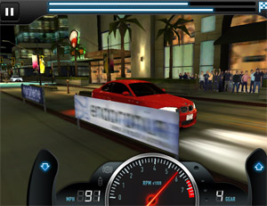

iOS 硬件指南
硬件型号
下面的列表总结了各代设备中可用的 iOS 硬件。可以在 gfxbench（该平台使用基准测试来比较不同的硬件功能）上比较当前设备的着色器性能。
iPhone 型号
iPhone 3GS
- Screen: 320x480 pixels, LCD at 163ppi
- ARM Cortex A8, 600 MHz CPU
- PowerVR SGX535 graphics processor
- 256MB of memory
- 3 megapixel camera with video capture capability
- 支持 GPS
- Compass support
iPhone 3GS: Shader-capable hardware, per-pixel-lighting (bumpmaps) can only be on small portions of the screen at once. Requires scripting optimization for complex games. This is the average hardware of the app market as of July 2012
iPhone 4
- 屏幕：960x640 像素，LCD，326 ppi，800:1 对比度。
- Apple A4 1 GHz ARM Cortex-A8 CPU
- PowerVR SGX535 GPU
- 512MB 内存
- Rear 5.0 MP backside illuminated CMOS image sensor with 720p HD video at 30 fps and LED flash
- 前置 30 万像素 (VGA)，地理标签功能，轻触对焦，480p@30 fps 标清视频拍摄
- 支持 GPS
- 支持指南针
iPhone 4S
- 屏幕：960x640 像素，LCD，326 ppi，800:1 对比度。
- Apple A5 双核 1 GHz ARM Cortex-A9 MPCore CPU
- 双核 PowerVR SGX543MP2 GPU
- 512MB 内存
- 后置 800 万像素，红外截止型滤光片，背照式传感器，1080p@30 fps 高清视频拍摄。
- 前置 30 万像素 (VGA)，地理标签功能，轻触对焦，480p@30 fps 标清视频拍摄
- 支持 GPS
- 支持指南针
 The iPhone 4S, with the new A5 chip, is capable of rendering complex shaders throughout the entire screen. Even image effects may be possible. However, optimizing your shaders is still crucial. But if your game isn’t trying to push limits of the device, optimizing scripting and gameplay is probably as much of a waste of time on this generation of devices as it is on PC.
The iPhone 4S, with the new A5 chip, is capable of rendering complex shaders throughout the entire screen. Even image effects may be possible. However, optimizing your shaders is still crucial. But if your game isn’t trying to push limits of the device, optimizing scripting and gameplay is probably as much of a waste of time on this generation of devices as it is on PC.
iPhone 5
- 屏幕：1136x640 像素，LCD，326 ppi。
- Apple A6 双核 1.3 GHz Apple 自主设计 ARMv7s CPU
- 三核 PowerVR SGX543MP3 GPU
- 1GB LPDDR2 内存
- 后置 800 万像素，红外截止型滤光片，背照式传感器，1080p@30 fps 高清视频拍摄。
- 前置 120 万像素，具备标签功能，轻触对焦，720p@30 fps 标清视频拍摄
- 支持 GPS
- 支持指南针
iPhone 5S
- 屏幕：4 英寸 1136x640 像素，LCD，326 ppi。
- Apple A7 双核 1.3 GHz Apple 自主设计 ARMv8 64 位 CPU
- M7 运动协处理器
- 四群集 PowerVR G643 GPU
- 1GB LPDDR3 内存
- 后置 800 万像素，红外截止型滤光片，背照式传感器，1080p@30 fps 高清视频拍摄。
- 前置 120 万像素，具备标签功能，轻触对焦，720p@30 fps 标清视频拍摄
- 支持 GPS 和 GLONASS
- 支持指南针
- 三轴陀螺仪
- 接近传感器
- 环境光传感器
- Touch ID Fingerbringt identity sensor
iPhone 6(+)
- iPhone6 屏幕：4.7 英寸 1134x750 像素，LCD，326 ppi。
- iPhone6+ 屏幕：5.5 英寸 1920x1080 像素，LCD，401 ppi。
- Apple A8 双核 1.4 GHz Apple 自主设计 ARMv8-A 64 位 CPU
- M8 运动协处理器
- 四核 PowerVR GX6450 GPU
- 1GB LPDDR3 内存
- 后置 800 万像素，红外截止型滤光片，背照式传感器，1080p@60 fps 高清视频拍摄。
- 前置 120 万像素，具备标签功能，轻触对焦，720p@30 fps 标清视频拍摄
- 支持 GPS 和 GLONASS
- 支持指南针
- 三轴陀螺仪
- 接近传感器
- 环境光传感器
- Touch ID Fingerbringt identity sensor
- NFC
iPod Touch 型号
iPod Touch 3rd generation
- Screen: 320x480 pixels, LCD at 163ppi
- Samsung S5L8920, 833MHz (underclocked to 600MHz) ARM Cortex-A8 CPU
- PowerVR SGX535 graphics processor
- 256MB DRAM
 iPod Touch 3rd gen: Shader-capable hardware, per-pixel-lighting (bumpmaps) can only be on small portions of the screen at once. Requires scripting optimization for complex games. This is the average hardware of the app market as of July 2012
iPod Touch 4th generation
- 屏幕：960x640 像素，LCD，326 ppi，800:1 对比度。
- Apple A4 1 GHz (underclocked to 800MHz) ARM Cortex-A8 CPU
- PowerVR SGX535 GPU
- 256MB DRAM
- Rear 0.7 MP CMOS image sensor with 720p HD video at 30 fps and LED flash
- 前置 30 万像素 (VGA)，地理标签功能，轻触对焦，480p@30 fps 标清视频拍摄
第五代 iPod Touch
- 屏幕：1136x640 像素，LCD，326 ppi
- Apple A5 双核 1GHz（降频至 800MHz）ARM Cortex-A9 MPCore CPU
- 双核 PowerVR SGX543MP2 GPU
- 512MB 内存
- 后置 500 万像素，背照式 CMOS 图像传感器，1080p@30 fps 高清视频拍摄，人脸识别，视频防抖。
- 前置 120 万像素，地理标签功能，轻触对焦，720p@30 fps 高清视频拍摄
iPad 型号
iPad
- 屏幕：1024x768 像素，LCD，132 ppi，LED 背光。
- Apple A4 1 GHz MHz ARM Cortex-A8 CPU
- PowerVR SGX535 GPU
- 256MB DDR Ram
- 支持 GPS
- Accelerometer, Proximity Sensor, Ambient Light Sensor, Magnetometer
- Wifi + Blueooth 2.1 + (3G Cellular HSDPA, 2G cellular EDGE on the 3G version)
- 机械按键：Home 键，休眠键，功能切换键，音量键。
iPad: Similar to iPod Touch 4th Generation and iPhone 4.
iPad 2
- 屏幕：1024x768 像素，LCD，132 ppi，LED 背光。
- Apple A5 双核 1 GHz ARM Cortex-A9 MPCore CPU
- 双核 PowerVR SGX543MP2 GPU
- 512MB DDR2 RAM
- 支持 GPS
- 加速度计，三轴陀螺仪，接近传感器，环境光传感器，磁力计
- Wifi + Blueooth 2.1 + (3G Cellular HSDPA, 2G cellular EDGE on the 3G version)
- 机械按键：Home 键，休眠键，功能切换键，音量键。
iPad2: The A5 can do full screen bumpmapping, assuming the shader is simple enough. However, it is likely that your game will perform best with bumpmapping only on crucial objects. Full screen image effects still out of reach. Scripting optimization less important.
第三代 iPad
- 屏幕：2048x1536 像素，LCD，264 ppi，LED 背光。
- Apple A5X
- 双核 1 GHz ARM Cortex-A9 MPCore CPU
- 四核 PowerVR SGX543MP4 GPU
- 1GB LPDDR2 RAM
- 支持 GPS 和 GLONASS
- 加速度计，三轴陀螺仪，接近传感器，环境光传感器，磁力计
- Wifi + Blueooth 4.0 + (LTE, 3G Cellular HSDPA, 2G cellular EDGE on the 3G version)
- 机械按键：Home 键，休眠键，功能切换键，音量键。
iPad 3 已经被证明支持渲染到纹理效果，如反射水和全屏图像效果。然而，优化着色器仍然至关重要。但是，如果您的游戏并非试图达到设备的极限性能，在这一代设备上优化脚本和游戏运行过程所需要的时间与在 PC 上所需要的时间几乎相同。
第四代 iPad
- 屏幕：2048x1536 像素，LCD，264 ppi，LED 背光。
- Apple A6X 双核 1.4 GHz Apple Swift
- 四核 PowerVR SGX554MP4 GPU
- 1GB LPDDR2 RAM
- 支持 GPS 和 GLONASS
- 加速度计，三轴陀螺仪，接近传感器，环境光传感器，磁力计
- Wifi + Blueooth 4.0 + (LTE, 3G Cellular HSDPA, 2G cellular EDGE on the 3G version)
- 机械按键：Home 键，休眠键，功能切换键，音量键。
iPad Air
- 屏幕：2048x1536 像素，LCD，264 ppi，LED 背光。
- Apple A7 双核 1.4 GHz Apple Cyclone
- 四核 PowerVR G6430 GPU
- M7 运动协处理器
- 1GB LPDDR3 RAM
- 支持 GPS 和 GLONASS
- 加速度计，三轴陀螺仪，接近传感器，环境光传感器，磁力计
- Wifi + Blueooth 4.0 + (LTE, 3G Cellular HSDPA, 2G cellular EDGE on the 3G version)
- 机械按键：Home 键，休眠键，功能切换键，音量键。
iPad Air 2
- 屏幕：2048x1536 像素，LCD，264 ppi，LED 背光。
- Apple A8X 1.5 GHz tripple-core
- 六核 PowerVR GX6650 GPU
- M8 运动协处理器
- 2GB LPDDR3 RAM
- 支持 GPS 和 GLONASS
- 加速度计，三轴陀螺仪，接近传感器，环境光传感器，磁力计
- Wifi + Blueooth 4.0 + (LTE, 3G Cellular HSDPA, 2G cellular EDGE on the 3G version)
- 机械按键：Home 键，休眠键，功能切换键，音量键。
iPad Mini
- 屏幕：1024x768 像素，LCD，163 ppi，LED 背光。
- Apple A5 双核 1 GHz ARM Cortex-A9
- 双核 PowerVR SGX543MP2 GPU
- 512MB DDR2 RAM
- 支持 GPS 和 GLONASS
- 加速度计，三轴陀螺仪，接近传感器，环境光传感器，磁力计
- Wifi + Blueooth 4.0 + (LTE, 3G Cellular HSDPA, 2G cellular EDGE on the 3G version)
- 机械按键：Home 键，休眠键，功能切换键，音量键。
iPad Mini 2
- 屏幕：2048x1536 像素，LCD，326 ppi，LED 背光。
- Apple A7 双核 1.3 GHz Apple Cyclone
- 四核 PowerVR G6430 GPU
- 1GB LPDDR3 RAM
- 支持 GPS 和 GLONASS
- 加速度计，三轴陀螺仪，接近传感器，环境光传感器，磁力计
- Wifi + Blueooth 4.0 + (LTE, 3G Cellular HSDPA, 2G cellular EDGE on the 3G version)
- 机械按键：Home 键，休眠键，功能切换键，音量键。
iPad Mini 3
- 屏幕：2048x1536 像素，LCD，326 ppi，LED 背光。
- Apple A7 双核 1.3 GHz Apple Cyclone
- 四核 PowerVR G6430 GPU
- 1GB LPDDR3 RAM
- 支持 GPS 和 GLONASS
- 加速度计，三轴陀螺仪，接近传感器，环境光传感器，磁力计
- Wifi + Blueooth 4.0 + (LTE, 3G Cellular HSDPA, 2G cellular EDGE on the 3G version)
- 机械按键：Home 键，休眠键，功能切换键，音量键。
图形处理单元和隐藏表面消除
iPhone/iPad 图形处理单元 (GPU) 是基于区块的延迟渲染器。与桌面计算机中的大多数 GPU 不同，iPhone/iPad GPU 重点是尽量减少场景处理过程中提前渲染图像所需的工作量。这样一来，只有可见像素才会消耗处理资源。
GPU 的帧缓冲区划分为区块，并且逐个区块进行渲染。首先，整个帧的三角形被收集并分配到区块。然后，将选择每个三角形的可见片元。最后，选择的三角形片元传递给光栅器（从摄像机中遮挡的三角形光栅器在这个阶段被拒绝）。
换句话说，iPhone/iPad GPU 以较低成本实现了__隐藏表面消除__操作。这种架构占用较少的内存带宽，功耗较低，并且更好地利用了纹理缓存。基于区块的延迟渲染允许设备在实际光栅化之前拒绝遮挡的片元，这有助于降低过度绘制。
For more information see also:-
SGX series
Starting with the iPhone 3GS, newer devices are equipped with the SGX series of GPUs. The SGX series features support for the OpenGL ES2.0 and newer devices support the OpenGL ES3.0 rendering API and vertex and pixel shaders. The Fixed-function pipeline is not supported natively on such GPUs, but instead is emulated by generating vertex and pixel shaders with analogous functionality on the fly.
The SGX series fully supports MultiSample anti-aliasing.
Texture Compression
The only texture compression format supported by iOS is PVRTC. PVRTC provides support for RGB and RGBA (color information plus an alpha channel) texture formats and can compress a single pixel to two or four bits.
The PVRTC format is essential to reduce the memory footprint and to reduce consumption of memory bandwidth (ie, the rate at which data can be read from memory, which is usually very limited on mobile devices).
顶点处理单元
iPhone/iPad 有一个专门负责顶点处理的单元，与光栅化并行运行计算。为了实现更高的并行效率，iPhone/iPad 比光栅器提前一帧处理顶点。
统一内存架构
iPhone/iPad 的 CPU 和 GPU 共享相同的内存。优点是您不需要担心纹理的视频内存不足（当然，除非主内存也用完了）。缺点是游戏和图形共享相同的内存带宽。您为图形专门分配的内存带宽越多，游戏和图形的内存带宽就越少。
多媒体协处理单元
iPhone/iPad 主 CPU 配备了功能强大的 SIMD（单指令、多数据）协处理器，支持 VFP 或 NEON 架构。Unity iOS 运行时利用这些单元执行多个任务，如计算蒙皮网格变换、几何体批处理、音频处理和其他计算密集型操作。